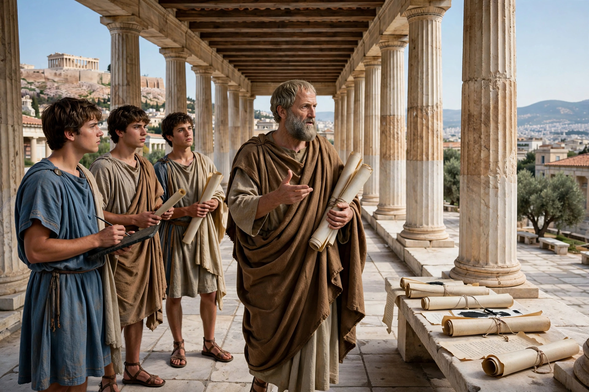

From Wikipedia, the free encyclopedia
| Peripatetic school | |
|---|---|
| Founder | Aristotle (384–322 BC) |
| Seat | The Lyceum, Athens |
| Successors | Theophrastus, Strato of Lampsacus, Andronicus of Rhodes |
| Key areas | Logic, natural science, ethics, metaphysics, rhetoric |
The Peripatetic school was a school of philosophy in ancient Greece founded by Aristotle and centred on the Lyceum in Athens, the gymnasium with covered walkways (peripatoi) from which the school took its name — traditionally explained by Aristotle's habit of teaching while walking. Its members, the Peripatetics, pursued Aristotle's wide-ranging programme of inquiry across logic, physics, biology, ethics, politics, and poetics.
Aristotle returned to Athens in 335 BC after tutoring Alexander the Great and founded his school in the Lyceum, where he lectured for some twelve years. On his death in 322 BC, Theophrastus succeeded him as scholarch and led the school for about 35 years, expanding its work in botany and natural history and reportedly teaching some 2,000 students. Strato of Lampsacus, the third head, emphasised physics. Later the school's fortunes waned; Aristotle's treatises had been carried off to Asia Minor and were only recovered and edited in the 1st century BC by Andronicus of Rhodes, whose edition of the corpus shaped all later Aristotelianism.
The Peripatetics maintained Aristotle's empirical orientation: knowledge begins from observation and the classification of phenomena, and natural things are explained by their forms and ends (teleology). In logic they preserved the syllogistic; in ethics, the doctrine of virtue as a mean and of eudaimonia as the human good. Through commentators such as Alexander of Aphrodisias, and later through Syriac, Arabic, and Latin transmission, Peripatetic philosophy became a dominant framework of medieval thought in both the Islamic world and Christian Europe.
Aristotle · Lyceum · Theophrastus · Plato · Stoicism
